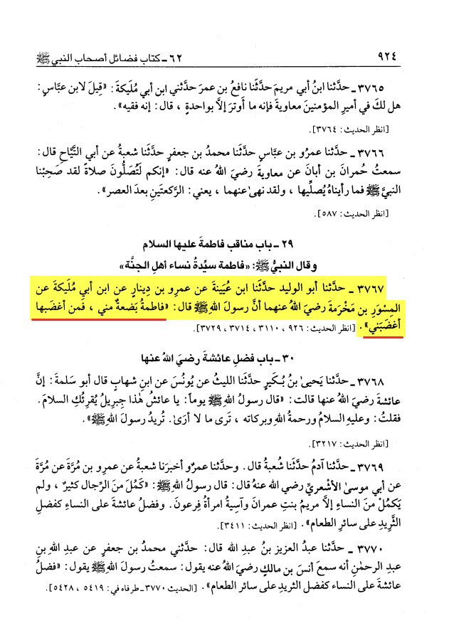
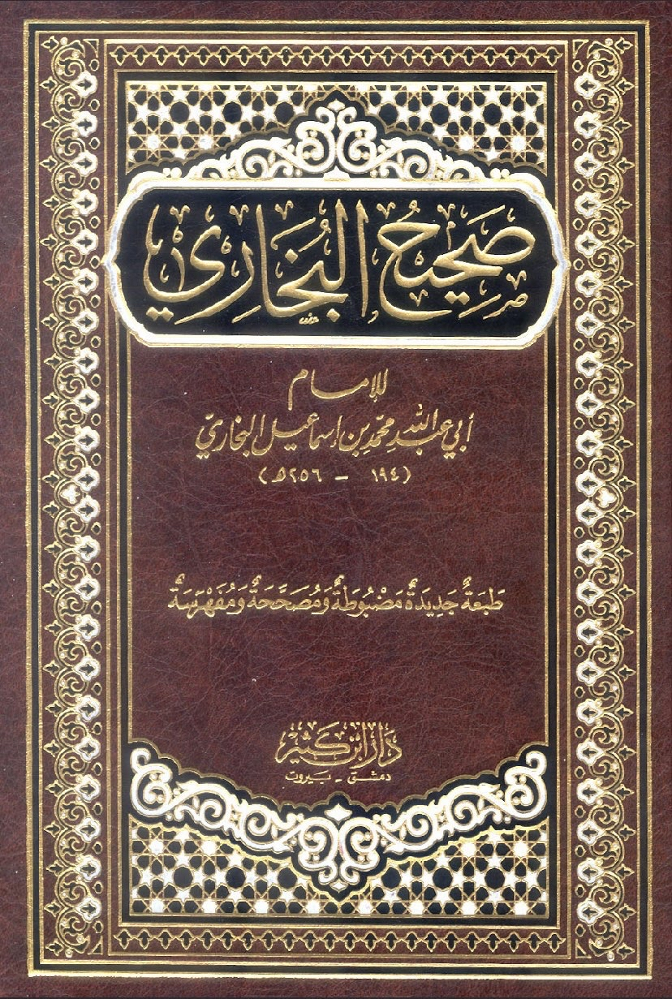
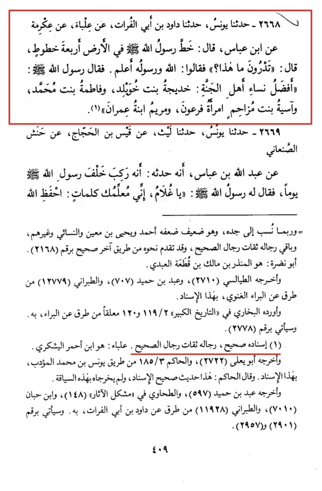
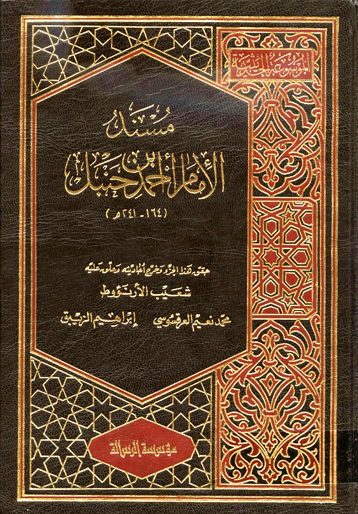

Allah's Messenger (ﷺ) said, "Fatima is a part of me, and whoever makes her angry, makes me angry."


Allah's Messenger (ﷺ) said: The greatest of all women of paradise are Khadijah (عليها السلام) The wife of rasuallah (عليها السلام)
Fatima (عليها السلام) daughter of Muhammad ( ﷺ), asia (عليها السلام) the wife of Pharoah and Maryam (عليها السلام) daughter of Imran ”